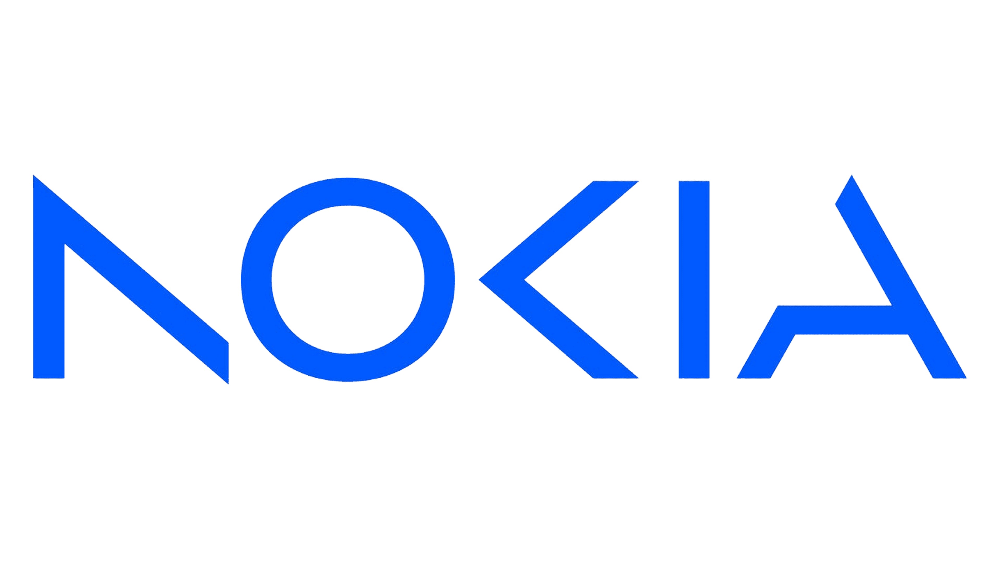
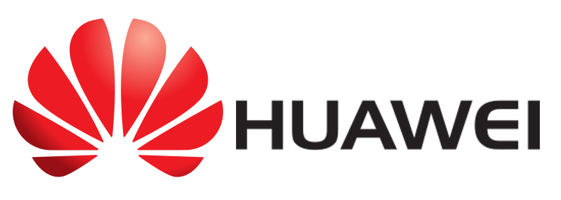
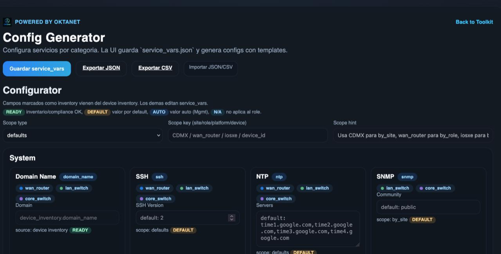
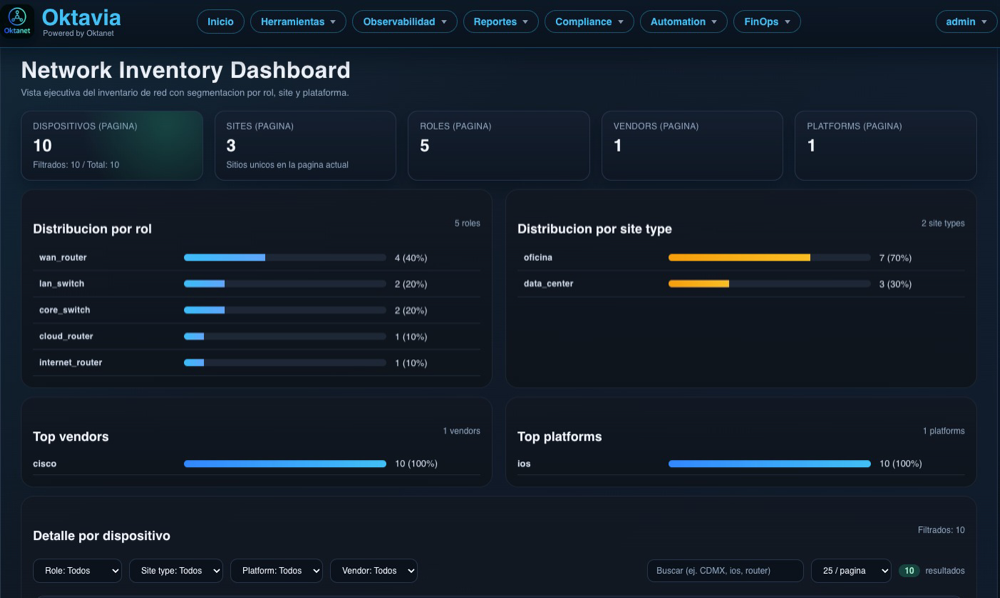
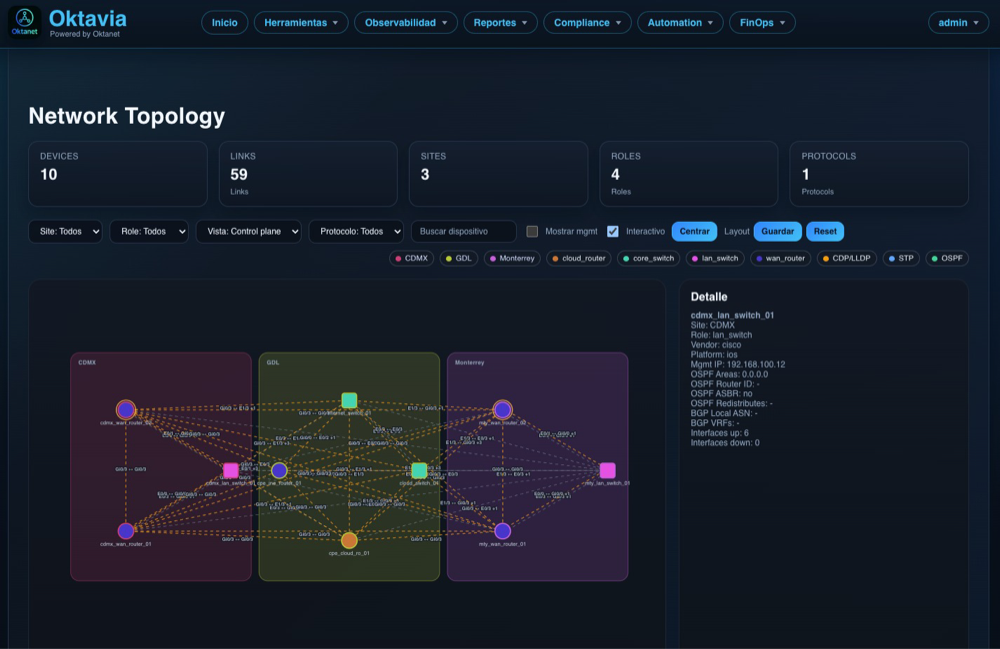

Descubrimiento multifabricante
Recolecta y normaliza datos de red para una base operativa consistente por sitio, función y dispositivo.
Automatización de redes segura y auditable
Oktavia combina un motor de automatización y una interfaz web simple para ejecutar flujos de red con control, trazabilidad y evidencia exportable.
Compatible con infraestructura multifabricante:


Producto principal
Diseñada para despliegues simples y demostraciones, con arquitectura preparada para servicios externos, Oktavia integra descubrimiento multifabricante, cumplimiento por sitio o dispositivo y generación de configuraciones objetivo en una sola consola.
Capacidades de la plataforma
Recolecta y normaliza datos de red para una base operativa consistente por sitio, función y dispositivo.
Evalúa cumplimiento por sitio/dispositivo con reglas editables y evidencia exportable para auditoría.
Genera configuraciones desde plantillas Jinja y variables de servicio sin aplicar cambios directos no controlados.
Combina inventario técnico, métricas operativas e historial para análisis de tendencias y operación diaria.
Visualiza red física y plano de control, y compara instantáneas para detectar desvíos y cambios propuestos.
Programa ejecuciones, descarga artefactos por tarea y automatiza flujos mediante una API extensible con puntos de soporte.
Desde cumplimiento y generación de configuraciones hasta topología, enrutamiento e inteligencia de IP, cada módulo produce resultados accionables.



Capacidades destacadas
Estos tres módulos aceleran diagnóstico, reducen riesgo de cambio y mejoran trazabilidad en cada ejecución.
Centraliza métricas, tendencias e historial para detectar anomalías y priorizar acciones de forma proactiva.
Compara instantáneas por dispositivo para identificar desviaciones, validar impacto y proponer cambios con evidencia.
Produce configuraciones desde plantillas Jinja y variables de servicio, manteniendo control antes de cualquier remediación.
Modelo de ejecución
Recolectamos y normalizamos el estado de la red por sitio y dispositivo para construir una línea base confiable.
Ejecutamos pruebas contra reglas editables para identificar desvíos y priorizar remediación controlada.
Generamos artefactos versionables (JSON/CSV/CFG) antes de cualquier cambio en la infraestructura.
Aplicamos cambios solo con control operativo, trazabilidad completa y seguimiento de desvíos.
Casos de uso
Evalúa cumplimiento por sitio o dispositivo sin procesos manuales y con evidencia exportable.
Genera configuraciones desde plantillas y variables de servicio para reducir riesgo operativo en cambios.
Visualiza inventario, topología, enrutamiento y tendencias para acelerar diagnóstico y priorización.
Impacto medible
Métricas de referencia en equipos que migran de procesos manuales a flujos controlados con artefactos.
menos tiempo en revisiones manuales de cumplimiento y configuración.
más visibilidad sobre desvíos de configuración por sitio, rol y dispositivo.
menos tareas repetitivas con tareas programadas y artefactos descargables.
capacidad de operación trazable 24/7 con validación y aprobación previa.
Arquitectura y enfoque
Oktavia no busca reemplazar un NMS de monitoreo en tiempo real. Su foco es estandarizar descubrimiento, cumplimiento y generación de configuraciones objetivo con un modelo de ejecución controlado y trazable.
La arquitectura separa la interfaz web y el motor de automatización para facilitar despliegues simples y evolución a servicios externos sin perder compatibilidad de API ni trazabilidad de artefactos.
Cada fabricante se integra con adaptador de descubrimiento, normalizador, reglas de cumplimiento y plantillas Jinja.
Prioriza remediación supervisada con aprobación, evitando automatizaciones opacas y no auditables.
La licencia básica cubre cumplimiento e inventario; la avanzada agrega observabilidad, programación y gemelo digital.
Conversemos
Comparte tu contexto técnico para diseñar un inicio rápido de descubrimiento, cumplimiento y generación de configuraciones en tu entorno actual.
Torre de Oficinas, Downtown Reforma
Ciudad de México